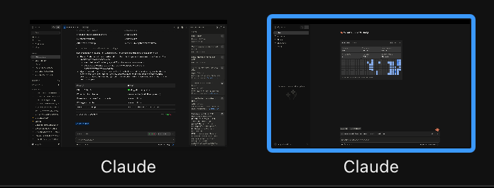
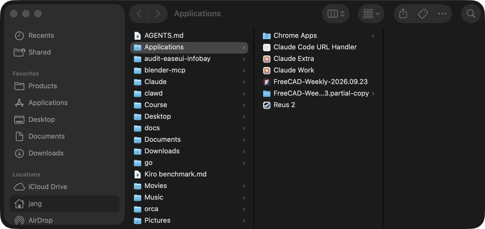
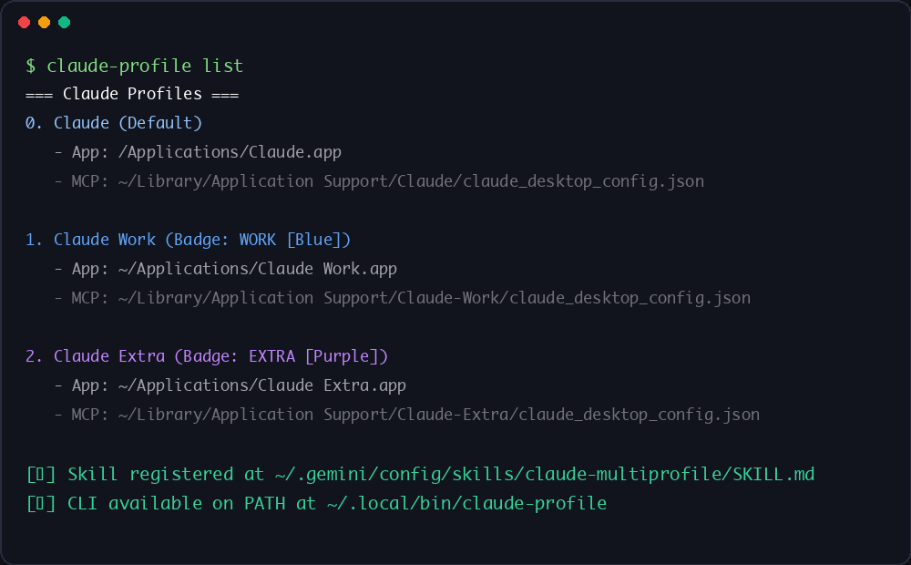

Claude (Default)
Original /Applications/Claude.app bound to Profile 1 at ~/Library/Application Support/Claude.
MACOS AI WORKFLOW · MULTI-PROFILE · CLAUDE & ANTIGRAVITY
Instant APFS copy-on-write macOS bundle cloner and Mach-O launcher that isolates accounts, MCP configs, and AltTab/Mission Control window names for Claude Desktop and Google Antigravity.

Six distinct macOS application bundles generated with 1 command: isolated accounts, separate MCP configs, and custom badged icons.
macOS APFS · verifiedclaude-profile & agy-profileCLI + Agent Skillcp -cR)Engineers frequently use multiple accounts across Claude Desktop and Google Antigravity (Personal vs. Work/Enterprise, internal company MCP servers vs. personal MCP servers). A common workaround uses osacompile with open -n -a "Claude" --args --user-data-dir=...—which breaks window management because macOS still binds every window to the original /Applications/Claude.app bundle.

The Problem: With open -n -a wrappers, AltTab, Mission Control, and Cmd+Tab label every window identically as "Claude" with the exact same icon.
Clones the bundle via APFS cp -cR (0 MB disk overhead), renames Contents/Frameworks/*Helper*.app, sets a dedicated CFBundleDisplayName & CFBundleIdentifier, and compiles a native Mach-O execv() launcher so AltTab, Mission Control, and Cmd+Tab show Claude Work, Claude Extra, and Antigravity Work.
.icns IconsExtracts the official 1024x1024 app icon, composites a high-contrast pill badge (WORK, EXTRA, DEV) in 12 color themes, strips Assets.car override catalogs, and compiles a multi-resolution .icns via macOS iconutil.
Wraps both Antigravity's Electron binary (--user-data-dir) and its Go language_server (--gemini_dir), isolating Google OAuth tokens (jetski-standalone-oauth-token) and mcp_config.json while symlinking your global GEMINI.md, skills, agents, and plugins.
Attach internal company Jira/Confluence/Database MCP servers strictly to your Work profile without leaking credentials or polluting context in your Personal or Extra profiles.
Where native in-app account switchers win, and it is not close: When an application ships a built-in multi-workspace switcher that supports simultaneous side-by-side windows with distinct MCP toolchains, zero bundle cloning is needed. Until Claude Desktop and Antigravity support simultaneous multi-account windows natively, APFS bundle cloning is the cleanest macOS solution.
Every profile receives a discrete, multi-resolution macOS .icns icon with a color-coded pill badge so you can distinguish instances immediately in the Dock, Spotlight, AltTab, and Mission Control.
Original /Applications/Claude.app bound to Profile 1 at ~/Library/Application Support/Claude.

Generated via claude-profile create Work --color blue with isolated MCP config at Claude-Work/.

Generated via claude-profile create Extra --color purple with isolated MCP config at Claude-Extra/.

Original /Applications/Antigravity.app using default ~/.gemini and primary Google OAuth token.

Generated via agy-profile create Work --color blue. Isolated OAuth & state + symlinked global skills.

Generated via agy-profile create Extra --color purple. Supports --share-auth or isolated OAuth.

~/ApplicationsEach generated app registers with macOS LaunchServices (lsregister) so Spotlight, Raycast, Dock, and AltTab display its custom name and badged icon immediately.
Launching a new profile opens a fresh authentication session without touching your active windows.

Inspect all installed profiles, bundle paths, and dedicated claude_desktop_config.json / .gemini-profiles locations with claude-profile list and agy-profile list.
Clone the repository and run the installer to place claude-profile and agy-profile in ~/.local/bin (plus install the agent skill for Claude Code and Antigravity).
git clone https://github.com/jangtrinh/claude-antigravity-multiprofile.git
cd claude-antigravity-multiprofile
./install.shclaude-profile list
agy-profile listWork profiles with blue badged icons for both Claude Desktop and Antigravity.
claude-profile create Work --color blue
agy-profile create Work --color blueExtra profile (or pass --share-auth on Antigravity to share your primary Google login while isolating windows and chat history).
claude-profile create Extra --color purple
agy-profile create Extra --color purple --share-authSupported badge colors: blue, purple, green, emerald, orange, amber, red, pink, cyan, teal, gray, dark.
create <Name>APFS-clones the base app to ~/Applications/, renames framework helpers, compiles the native Mach-O launcher, generates the badged .icns, and initializes isolated MCP config files.
--share-authAvailable in agy-profile create: shares your default ~/.gemini/jetski-standalone-oauth-token while isolating window identity and ~/.gemini/antigravity-<slug> state.
listPrints every installed profile bundle alongside its exact user data directory and claude_desktop_config.json or .gemini-profiles path.
delete <Name>Removes the ~/Applications/<App>.app bundle cleanly while preserving your user data and MCP configurations on disk.
Using open -n -a launches the original /Applications/Claude.app binary. As a result, macOS WindowServer, AltTab, Mission Control, and Cmd+Tab label every window identically as Claude with the exact same icon. By creating an APFS copy-on-write standalone bundle with its own CFBundleDisplayName, CFBundleIdentifier, renamed Framework Helpers, and Mach-O execv() launcher, macOS treats each profile as a first-class app (Claude Work, Claude Extra) with zero extra disk usage.
No. On macOS APFS volumes, cp -cR performs an instant copy-on-write (clonefile) operation at the filesystem metadata level in under one second, consuming 0 MB of additional disk blocks for unchanged Electron frameworks.
Claude Desktop is a single-layer Electron app where --user-data-dir isolates both login and claude_desktop_config.json. Google Antigravity has two layers: an Electron frontend and a Go backend (language_server). agy-profile wraps both binaries with native Mach-O launchers, passing --user-data-dir to Electron and --gemini_dir to language_server so each instance gets its own Google OAuth token (jetski-standalone-oauth-token) and MCP config while automatically symlinking your global GEMINI.md, skills, agents, and plugins.
No. Both claude-profile and agy-profile run 100% locally on your Mac, never touch /Applications/Claude.app or /Applications/Antigravity.app, and include zero network calls or telemetry.
Running claude-profile delete <Name> or agy-profile delete <Name> removes only the ~/Applications/<App>.app bundle while preserving your ~/Library/Application Support and ~/.gemini-profiles data directories so credentials, chat history, and MCP configs are never accidentally wiped.
Explore companion developer tools and AI agent workflows in the DESIGN:OS open-source suite.